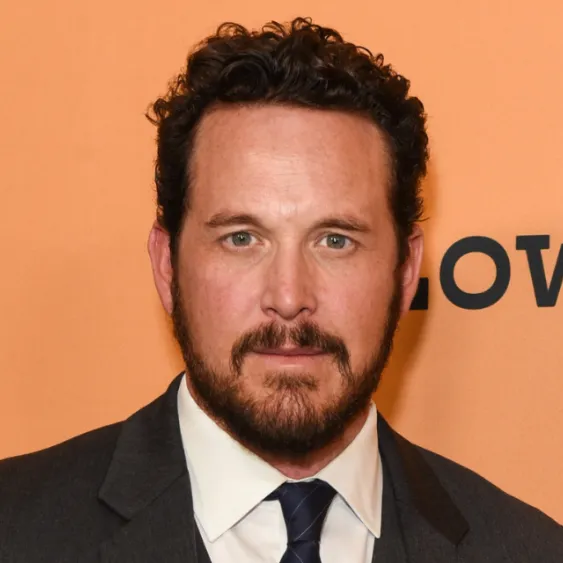

Cole Hauser
Born: 22 March 1975
Age:
Years Active: 1992-present
Cole Kenneth Hauser (born March 22, 1975) is an American actor. He is known for film roles in Higher Learning, School Ties, Dazed and Confused, Good Will Hunting, Pitch Black, Tigerland, Hart's War, Tears of the Sun, The Family that Preys, 2 Fast 2 Furious, The Cave, The Break-Up, A Good Day to Die Hard, Olympus Has Fallen, and Transcendence. He was nominated for the Independent Spirit Award for Best Supporting Male for his performance in Tigerland.
On television, he starred as Officer Randy Willitz on the police crime drama series High Incident, Ethan Kelly on the police drama Rogue and Rip Wheeler on the Paramount Network western drama series Yellowstone.
Cole Hauser is the son of Cass Warner, who founded the film production company Warner Sisters, and actor Wings Hauser. His paternal grandfather was screenwriter Dwight Hauser. One of Cole's maternal great-grandfathers was film mogul Harry Warner, a founding partner of Warner Bros., and his maternal grandfather was Milton Sperling, a Hollywood screenwriter and independent film producer. Hauser's maternal grandmother, Betty Mae Warner, a painter, sculptor, political activist and gallery owner, was married to Stanley Sheinbaum, a political activist, economist, philanthropist, and a former Los Angeles Police Department commissioner. Hauser is of German and Irish descent on his father's side and Jewish on his mother's.
Hauser's parents divorced in 1977, when he was two years old. According to him, at roughly fifteen, he first met his father after the relocation-induced years of separation. His father took him in for a year and taught him about auditioning. Prior to that, his mother had moved Hauser and his half-brother and sisters from Santa Barbara to Oregon to Florida and then back to Santa Barbara within a 12-year span. At the time, he participated heavily in sports, but half-heartedly pursued school. He was admitted to the short-listed circle of talent at a talent summer camp in the Catskill Mountains-Stagedoor Manor Performing Arts Center, then won the leading role in the stage play Dark of the Moon, which earned him standing ovations. At 16 years old, he left high school to act.

The Ritual Killer (2023)

Chase (2010)